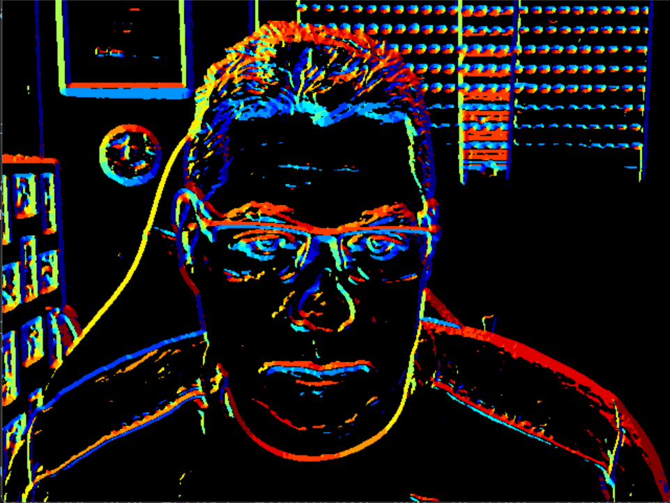

Histogram of Oriented Gradients
Bei den s.g. HoG (Histogram of Oriented Gradients) Featuren handelt es sich um eine frühe Technik aus einem Bild geeigente Informationen (Features) abzuleiten um damit komplexe Objekte klassifizeiren zu können. Konkret wurden HOG-Features zuerst von N. Dalal und B. Triggs in Histograms of oriented gradients for human detection, IEEE 2005 vorgeschlagen.
HoG - Überblick
Zunächst werden für das Bild mit dem Sobel-Operator die Gradienten in X und Y-Richtung bestimmt. Es wird eine feste Anzahl an möglichen Gradientenrichtungen (z.B. 8) festgelegt und zu jedem Pixel wird festgelegt in welche dieser möglichen Richtungen der Gradient an dieser Stelle zeigt (die Gradientenrichtungen werden quantisiert).
Dann wird das Bild in kleinere Blöcke unterteilt (z.B. 8x8 Pixel). Zu jedem Block wird nun für alle möglichen Gradientenrichtungen gezählt wieviele der Pixel in diese Richtung „zeigen“. Es wird also für diesen Block ein Histogram der vorkommenden Gradientenrichtungen erstellt. Um weniger sensibel gegenüber Bildrauschen zu sein werden die Gradientenrichtungen mit ihrer jeweiligen Gradientenstärke gewichtet.
HoG from Scratch - Die Webcam öffnen
Wir beginnen wieder mit unserem Standard Loop und öffnen die Webcam. Wandeln Sie das Bild direkt in ein Graustufenbild (0 bis 255) und konvertieren Sie den Datentyp in np.float32 (0.0 bis 1.0).
und rufen sie die noch zu implementierende Methode process_hog mit diesem Grauwertbild auf. Hier nocheinmal die Auflistung der Methoden die dir dabei helfen können:
cv2.VideoCapture – öffnet einen Video-Stream oder eine Kamera.
cv2.VideoCapture.read – liest einen Frame aus dem Stream.
cv2.VideoCapture.isOpened – prüft, ob die Kamera geöffnet werden konnte.
cv2.cvtColor – konvertiert Farbräume (z. B. in Graustufen).
cv2.waitKey – wartet auf Tasteneingabe.
Lösung anzeigen
def process_hog(gray):
pass
if __name__ == "__main__":
cap = cv2.VideoCapture(0)
if not cap.isOpened():
print("Cannot open camera")
exit()
while True:
# Capture frame-by-frame
ret, frame = cap.read()
# if frame is read correctly ret is True
if not ret:
exit()
# Convert image to gray scale
gray = np.float32(cv2.cvtColor(frame, cv2.COLOR_BGR2GRAY) / 255.0)
process_hog(gray)
# Display the resulting frame
if cv2.waitKey(1) == ord("q"):
break
HoG from Scratch - Die Gradientenrichtungen
Im ersten Schritt bestimmen wir zunächst die Richtungen der quantisierten Gradientenrichtungen. Dazu teilen wir das Intervall von 0 bis \(2\pi\) in gleichmäßige Schritten ein.
Verwenden Sie numpy.linspace und schließen Sie den letzten Datenpunkt aus weil 0° Grad und 360° natürlich der selben Richtung entsprechen. Für z.B. 8 Gradientenrichtungen sollten Sie die folgenden Winkel finden
winkel = [0. 0.785 1.571 2.356 3.142 3.927 4.712 5.498]
Zu einem konkreten Winkel \(\alpha\) können wir die dazugehörige Gradientenrichtung \(\vec v\) berechnen
Berechnen Sie nun für jeden der Winkel die dazugehörige Winkelrichtung und speichern Sie alle Winkel in einem \(2xN\) array. Für z.B. 8 Gradientenrichtungen sollte ihre Array dann so aussehen
directions = [[ 1. 0.707 0. -0.707 -1. -0.707 -0. 0.707] [ 0. 0.707 1. 0.707 0. -0.707 -1. -0.707]]
Schreiben Sie eine Funktion calculate_gradient_directions welche zu einer Anzahl an Richtungen dieses dazugehörige Array zurückgibt.
Lösung anzeigen
def calculate_gradient_directions(totalDirections = 12):
angles = np.linspace(0, 2.0 * np.pi, totalDirections, endpoint=False)
hogDirections = np.zeros((2,totalDirections))
hogDirections[0, :] = np.cos(angles)
hogDirections[1, :] = np.sin(angles)
return hogDirections
HoG from Scratch - Gradienten und Gradientestärke
Nun implementieren wir die process_hog Methode. Berechnen Sie zunächst wieder für das Grauwertbild mit cv2.Sobel die Gradienten in X und Y-Richtung. Verwenden Sie ksize=5 und berechnen Sie die Gradientenstärke als
Speichern Sie das Gradientenbild in X-Richtung als gx, das Gradientenbild in Y-Richtung als gy sowie die Gradientstärke als mag.
Lösung anzeigen
def process_hog(gray, totalDirections = 12):
gx = cv2.Sobel(gray, cv2.CV_32F, 1, 0, ksize=5)
gy = cv2.Sobel(gray, cv2.CV_32F, 0, 1, ksize=5)
mag = np.sqrt(gx**2 + gy**2)
HoG from Scratch - Gradientenrichtung
Zur Bestimmung der Gradientenrichtung bestimmen wir das Skalarprodukt
für alle möglichen Gradientenrichtungen und ordnen den Pixel derjenigen Richtung zu, wo dieses Skalarprodukt maximal wird. Mathematisch berechnen wir also
für jeden Pixel.
Um diese Berechnung zu vereinfachen, flatten Sie zunächst die Gradientenbilder gx und gy (numpy.flatten). Erzeugen Sie dann gleichgroße neue Arrays winningBin und bestDot gefüllt mit nullen (np.zeros_like)
Iterieren Sie über alle Gradientenrichtungen (rufen Sie Ihre Funktion calculate_gradient_directions auf um diese Richtungen zu bekommen) und berechnen Sie das Skalarprodukt (siehe oben). Bestimmen Sie diejenigen Einträge, bei denen das neue Skalarprodukt größer ist als das bisherige (vgl. mit bestDot) und überschreiben Sie für diese Einträge sowohl bestDot (mit dem neuen, größeren Skalarprodukt) als auch winningBin mit dem Index des aktuell geprüften Bins.
Am Ende erhalten Sie so zu jedem Pixel ihres Originalbildes denjenigen Index (Bin) der Gradientenrichtung, die am ehesten den tatsächlichen Gradienten des Pixels repräsentiert (in winningBin) sowie dessen Gradientenstärke (in mag).
Damit winningBin wieder als Bild interpretiert werden kann reshapen sie das Bild wieder auf die Größen des originalen Grauwertbildes.
Lösung anzeigen
def process_hog(gray, totalDirections = 12):
gx = cv2.Sobel(gray, cv2.CV_32F, 1, 0, ksize=5)
gy = cv2.Sobel(gray, cv2.CV_32F, 0, 1, ksize=5)
mag = np.sqrt(gx**2 + gy**2)
gx, gy = gx.flatten(), gy.flatten()
winningBin, bestDot = np.zeros_like(gx), np.zeros_like(gx)
for direction in range(totalDirections):
dot = gx * hogDirections[0, direction] + gy * hogDirections[1, direction]
greaterIndices = dot > bestDot
winningBin[greaterIndices] = direction
bestDot[greaterIndices] = dot[greaterIndices]
winningBin = winningBin.reshape(gray.shape)
HoG from Scratch - Gradientenrichtungen anzeigen
Es macht Sinn diese Gradientenrichtungen konkret anzuzeigen um ein Gefühl für die so kodierte Information zu bekommen. Wandeln Sie dazu das winningBin Bild zunächst in ein Grauwertbild zurück indem Sie den Bereich der möglichen Bins \([0,\dots,N-1]\) linear auf den Bereich \([0,\dots,255]\) abbilden. Wandeln Sie auch den Datentypen zurück in einen np.uint8. Verwenden Sie dann cv2.applyColoMap um das Bild geeignet einzufärben (z.B. mit der cv2.COLORMAP_JET Farbskala) und zeigen Sie es mit cv2.imshow an. Es kann für die Anzeige Sinn machen zu schwache Gradienten zu unterdrücken. Setzen Sie daher in ihrem Farbbild alle Pixel auf \((0,0,0)\), für welche die Gradientestärke geringen als 1.5 ist.
Ihr Bild sollte dann in etwa so aussehen (bei 12 Histogrambins):
{kind=link}
Lösung anzeigen
def process_hog(gray, totalDirections = 12):
gx = cv2.Sobel(gray, cv2.CV_32F, 1, 0, ksize=5)
gy = cv2.Sobel(gray, cv2.CV_32F, 0, 1, ksize=5)
mag = np.sqrt(gx**2 + gy**2)
gx, gy = gx.flatten(), gy.flatten()
winningBin, bestDot = np.zeros_like(gx), np.zeros_like(gx)
for direction in range(totalDirections):
dot = gx * hogDirections[0, direction] + gy * hogDirections[1, direction]
greaterIndices = dot > bestDot
winningBin[greaterIndices] = direction
bestDot[greaterIndices] = dot[greaterIndices]
winningBin = winningBin.reshape(gray.shape)
binGray = np.uint8(255 * winningBin / (totalDirections - 1))
binColor= cv2.applyColorMap(binGray, cv2.COLORMAP_JET)
binColor[mag < 1.5] = (0, 0, 0)
cv2.imshow("Gradient Direction", binColor)
HoG from Scratch - Der Feature-Vektor
Implementieren Sie nun eine Methode hog_cell. Diese soll das Magnituden-Bild mag, die dominanten Gradientenrichtungen winningBin sowie die Anzahl der Gradientenrichtungen erhalten. Eine geeignete Signatur dieser Methode könnte so aussehen:
def hog_cell(magnitude, winningBin, totalDirections):
Das Ziel ist es hier für die übergebenen Bilder (später: Bildausschnitte) das Histogram der Gradientenrichtungen zu berechnen und als normierten Feature-Vektor zurückzugeben. Wenn wir also \(N\) Gradientenrichtungen haben geben wir einen \(N\)-dimensionalen Featurevektor zurück, welcher für jede prinzipielle Richtung der Summe der jeweiligen Gradientenstärken enthält. Mathematisch berechnen wir also
mit
Achtung: Im Orignalpaper wird der HoG-Featurevektor über mehrere Zellen normalisiert. Wir weichen hier von dieser Implementierung ab und dividieren den Vektor einfach nur durch eine Konstante (in diesem Fall: 256).
Lösung anzeigen
def hog_cell(magnitude, winningBin, totalDirections):
cellVector = np.zeros(totalDirections)
for index in range(totalDirections):
cellVector[index] = magnitude[winningBin == index].sum()
return cellVector / 256.0
HoG from Scratch - Visualisierung einer HoG-Zelle
Um eine einzelne HoG-Zelle zu visualisieren zeichnen wir für jede der Gradientenrichtungen einen stilisierten Vektorpfeil. Als Helligkeitsintenstät des Pfeils verwenden wir die akkumulierte Gradientenstärek. Schreiben Sie eine Methode visualize_hog_cell welche den gerade berechneten HoG-Vektor, das Array mit Gradientenrichtungsvektoren sowie die Größe der zu zeichnenden Zelle (Breite und Höhe) erhält. Eine geeignete Signatur dieser Methode könnte also so aussehen:
def visualize_hog_cell(cellVector, directions, shape=(16,16)):
Diese Methode soll ein entsprechend der angegebenen Zellengröße dimensioniertes Grauwertbild zurückgeben. Erzeugen Sie dieses Bild indem Sie mit np.zeros eine passend dimensionierte Matrix gefüllt mit nullen erzeugen. Iterieren Sie dann über alle Einträge des cellVector und bestimmen Sie die dazugehörige Gradientenrichtung anhand des ebenfalls übergebenen directions-Array. Nutzen Sie cv2.line um ausgehend von der Mitte des Bildes ein Linie in diese Richtung zu zeichnen. Skalieren Sie den Richtungsvektor \((dx,dy)\) passend zur (halben) Zellengröße und wählen Sie die akkumulierte Gradientenstärke aus dem cellVector als Farbe für die Linie.
Geben Sie schließlich das Bild zurück.
Lösung anzeigen
def visualize_hog_cell(cellVector, directions, shape=(16,16)):
cell = np.zeros(shape)
W, H = shape[0], shape[1]
for index, value in enumerate(cellVector):
dx, dy = directions[0, index], directions[1, index]
x0, y0 = int(W // 2), int(H // 2)
x1, y1 = int(x0 + dx * W / 2), int(y0 + dy * H / 2)
cv2.line(cell, (x0, y0), (x1, y1), (value, value, value))
return cell
HoG from Scratch - Berechnen der Features über das ganze Bild
Wir wollen das Bild nun in Zellen der Größe \((12x12)\) Pixel unterteilen. Für jede dieser Zelle schneiden wir den entsprechenden Abschnitt aus dem winningBin- und dem mag-Bild aus, rufen die gerade implementierte hog_cell-Methode auf um den Featurevektor zu bestimmen und lassen diesen mit der visualize_hog_cell-Methode zeichnen. Die entstehenden Einzelbilder kopieren wir zusammen in ein großes Bild und zeigen dieses ebenfalls an. Eine entsprechende Implementierung könnte z.B. so aussehen
cellSize = 8 hogImage = np.zeros_like(gray) for x0 in range(0, gray.shape[1], cellSize): for y0 in range(0, gray.shape[0], cellSize): x1, y1 = x0 + cellSize, y0 + cellSize cellVector = hog_cell(mag[y0:y1, x0:x1], winningBin[y0:y1, x0:x1], totalDirections) hogImage[y0:y1, x0:x1] = visualize_hog_cell(cellVector, hogDirections, (cellSize, cellSize)) cv2.imshow("HOG Vector", hogImage)